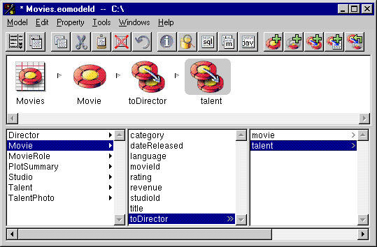

Table of Contents
Table of Contents  Previous Section
Previous Section
For example, you can add a to-many relationship called toDirectors from Movie to Director since a movie can have more than one director.
For example, you can add a to-one relationship called talent from Director to Talent. For each director a movie has, there is a corresponding single entry in the Talent table.
From Movie, select the relationship toDirectors to display the properties of Director.
 Flatten Property.
Flatten Property.

Figure 33. Flattening a Relationship
 Next Section
Next Section